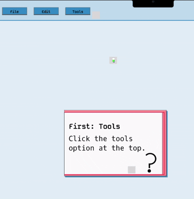

Discussion
This project focuses on creating alternatives for the current feature introduction tutorials of design
programs. These programs prompts an interesting challenge within their onboarding process. Their tools and
functionalities are specific in purpose and abundant in quantities. As such, their onboarding process is
often disregarded as an valuable part of the application.
New users often find onboarding tutorials for their creative tools to be irrelevant and unhelpful.
None of the information was retained by the users, thus it create a steep user learning curve. Therefore, it
is important to restructure the traditional onboarding process to better suits users' needs. Hence, I
prompted the question: How might we make the information more easily accessible and meaningfulr to the user?

User insteraction with part of the application
This project was doned in 12 weeks and I was able to collect five interviewees for the user research. The
methofology is a combination of shadowing and interviews. After the research, I reframed my entire project
to solve the root issue of my users' grievances with the current design program onboarding process.
Full
Process Document